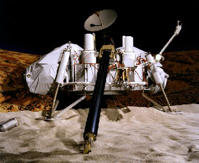
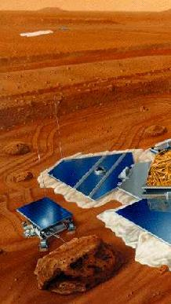
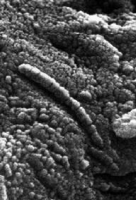
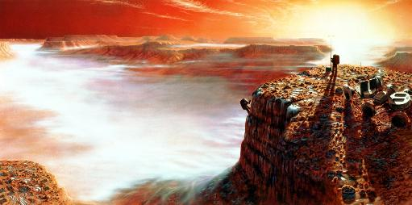

ASTR 121 (O'Connell) Study Guide
17. MARS II

Artist's concept of Viking lander on
Martian surface
This Guide continues the discussion of Mars begun in
Guide 16 and covers the three
successful Martian lander missions and the tantalizing but
still marginal evidence for early life on Mars.
F. VIKING LANDER MISSIONS (1976)
- Most ambitious robot space mission to that time. Two separate,
nearly identical, spacecraft each consisting of an orbiter and a
lander component. Orbiters mapped some 99% of Martian surface
- Very sophisticated landers (though no
rovers), taking weather & soil samples (shallow) at two sites
- Performed lab tests for organisms:
- Organic molecules
- Metabolism (solid ===> gas)
- Photosynthesis (gas ===> solid)
- Respiration (gas ===> gas)
- Results:
- Iron-rich minerals; iron oxides (rust) produce red soil
color
- No organics; "strange" chemistry, but no biological
activity
- Soil samples only about 10cm deep; surface may be sterilized
by solar UV and not representative

G. MARS PATHFINDER MISSION (1997)
- First of a new series of
moderate-cost Martian orbiters and landers leading up to robot
missions to return soil & rock samples to Earth.
- Novel airbag cushions
permit landing without usual powerful (& heavy) retro-rockets. Here
is an animation of how these work.
- Study atmosphere, soil, rocks on Ares Vallis, a floodplain region. First robot "rover" to
sample rocks/soil distant from lander.
- Uses Alpha-Proton-X-ray Spectrometer to determine mineral
content of rocks.
- Preliminary results: pebble & rock shapes give strong evidence
for catastrophic floods. Possible sedimentary rocks, likewise.
Minerals rich in quartz suggest differentiated interior. Dynamical
evidence for iron core, implying hot, active interior at early times.
General picture is more Earth-like than earlier thought, with
perhaps long "wet-era" with stable liquid water on surface.
H. MARS EXPLORATION ROVER MISSION (2004)
- The MER mission consists of two landers with rovers, "Spirit" and
"Opportunity," launched in mid-2003, which landed on Mars in January
2004.
 Click here for QuickTime
animations of the launch and landing sequences of the MER mission.
Click here for QuickTime
animations of the launch and landing sequences of the MER mission.
- Landing sites were both chosen for their potential to demonstrate
the presence of water on Mars in the past: Gusev Crater (Spirit) is a possible ancient lake bed;
Meridiani Planum (Opportunity) is a plain with signs
of a water-deposited mineral (hematite).
- Both sites have yielded strong evidence of a watery past on Mars
by detecting traces of minerals which are produced in a water-rich
environment and layering which is expected for rocks laid down at the
edge of a lake or ocean.
I. "SNC" METEORITES
- Unanticipated source of info: a rare class of meteorite (24/20,000).
Found in
Antarctic meteorite fields.
- = Fragments of MARS ejected by asteroid impact
- 1-2 Byr old; note that unprocessed remnants of the solar nebula
would be much older (4.5 Byr)
- Isotopes match Viking results
- Minerals show Mars once very WET. Water several 100 meters deep
(global). Supports Pathfinder & imaging evidence for massive water
flows.
J. LIFE ON MARS??

- SNC (Martian) Meteorite ALH
84001; over 3.5 Byr old
- Contains evidence of microorganisms (August 1996 +)
- Carbonate inclusions. "PAH" molecules
===> biosynthesis?
- Microfossils (0.0001 mm) (see image at right; click for
an enlarged view)
- ===> BACTERIAL LIFE MAY HAVE EXISTED on Mars
during the "wet era", 1-4 Byr ago
- But interpretation of meteorite results is controversial.
See the Lunar & Planetary Institute web site for links
discussing various sides of the debate.
K. MARTIAN SATELLITES
- 2 satellites: Phobos & Deimos, discovered 1877
- Small (10-17 mi), irregular
- Captured asteroids
L. EXPEDITIONS TO MARS
Serious proposals for human expeditions to Mars have been around for
over 50 years. In January 2004, President Bush proposed a long term
commitment (20+ years) to a program that would send expeditions back to
the Moon and ultimately to Mars.
Human space missions are much more costly than the robot craft we have
used for all previous studies of Mars because of the life support
systems needed (both during the trip and once on Mars' surface).
However, many people are eager to go---for both scientific and
personal reasons---and are exploring the various necessary
technologies. There is much discussion of "terraforming" Mars---i.e.
making it suitable for human colonies by releasing trapped water onto
its surface and generating oxygen for an atmosphere.
The Moon/Mars initiative is controversial.
Here is
a link to a NASA Watch forum on the subject.
Click here for an article
on a group experimenting with a Mars habitation module.

Artist's concept of human expedition to Valles Marinaris.
Reading for this lecture:
Seeds textbook: 22.2 and 22.3
Study Guide 17
Reading for next lecture:
H. G. Wells War of the Worlds
Study Guide 18
Web Links:
Last modified
April 2007 by rwo
Text copyright © 1998-2007 Robert W. O'Connell. All
rights reserved. These notes are intended for the private,
noncommercial use of students enrolled in Astronomy 121 at the
University of Virginia.
 Previous Guide
Previous Guide
 Guide Index
Guide Index
 Next Guide
Next Guide